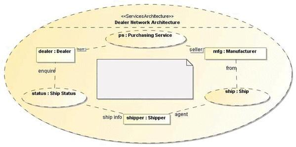
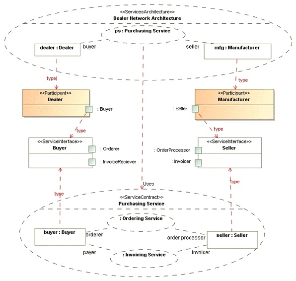

| Example: ServicesArchitecture (SoaML) |
 |
|
| Related Elements |
|---|
Figure 1 illustrates a services architecture involving three participants (dealer, mfg, and shipper) and three services (Purchasing Service, Ship Status, and Ship). Each service is modeled using a CollaborationUse that is typed as the ServiceContract which is associated with the service. Figure 1. A ServicesArchitecture involving three participants and three services. Note: the purpose of the dealer network architecture is to establish the financially related services between dealers and manufacturers such that any dealer can do business with any manufacturer.  This services architecture shows how a community of dealers, manufacturers, and shippers can work together. Each party must provide and use the services specified in the architecture. If they do, they will then be able to participate in this community. This "B2B" SOA specifies the roles of the parties and the services they provide and use without specifying anything about who they are, their organizational structure, or internal processes. No "controller" or "mediator" is required as long as each agrees to the service contracts. By specifying a ServicesArchitecture, we can understand the services in our enterprise and communities in context and recognize the real (business) dependencies that exist between the participants. The purpose of the services architecture might also be specified as a comment. Each participant in a ServicesArchitecture must have a port that is compatible with the roles played in each ServiceContract role it is bound to. Figure 2 serves to illustrate how the different elements in a ServicesArchitecture are related (the red lines are illustrative only and have no UML meaning). Figure 2. Relations between the elements that compose a ServicesArchitecture  The diagram shows the "trace" between a service architecture through the participants and their service points to the service contract that defines the service interfaces for each of the service points. What the above shows is that the Dealer and Manufacturer are participants in a "Dealer Network Architecture" in which the dealer plays the role of the "buyer" in the "Purchasing Service" and the "Manufacturer" plays the role of the seller in the same service. Participating in these services requires that they have service ports defined on the participant type - these are the ports on "Dealer" and "Manufacturer" types. These ports have a ServiceInterface type defined in the "Purchasing Service" contract. These service interfaces each have two ports because Purchasing Service is a compound service contract - the service interfaces have a port for each nested service: Ordering Service & Invoicing Service, respectively. Refer to the ServiceContract (SoaML) example for further discussion of the Ordering Service service contract and compound service contracts. |
Several of the above definitions were copied from the Service oriented architecture Modeling Language (SoaML) Specification for the UML Profile and Metamodel Services. View the full copyright notice.
Licensed Materials - Property of IBM |